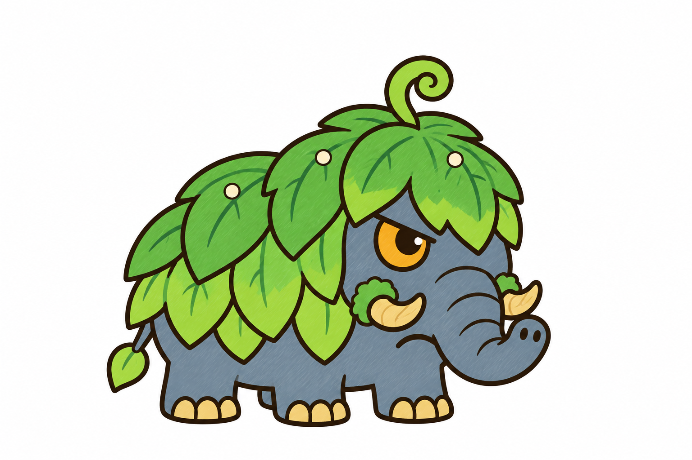
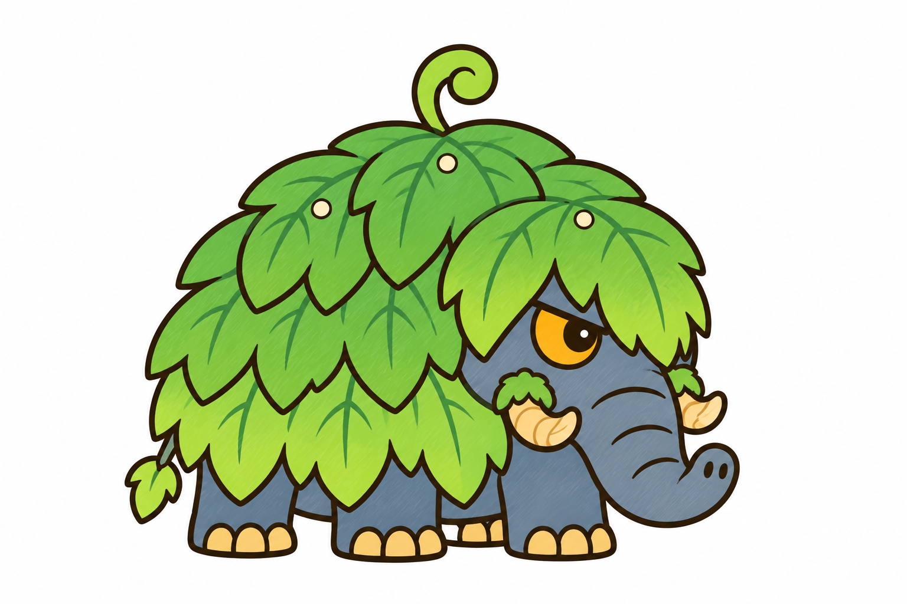
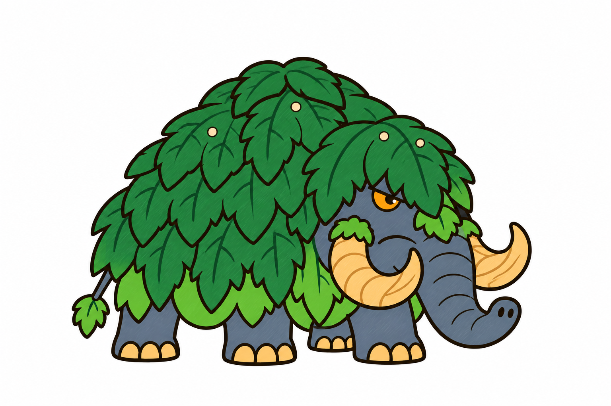

Ma mút rừng · DẠNG 1 (voi con) · hai hướng, chờ bạn chọn
A · ao_choang: áo choàng lá non ngắn hai tầng, bụng và chân để trần, mầm xoắn trên đầu

B · nam_la: ụ lá non tròn phủ gần kín thân (ba tầng) như dạng lớn, mầm xoắn trên u vai

Dạng 2 đã duyệt (để so cùng dòng):
